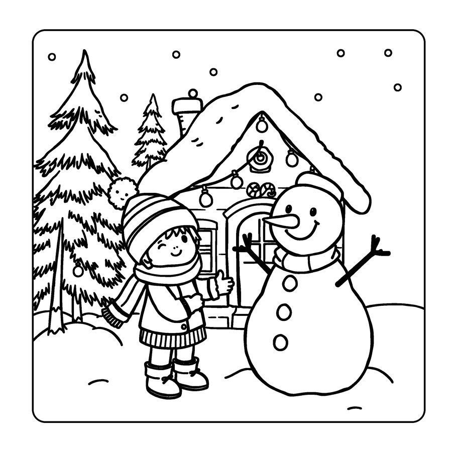

Kids Building a Snowman Christmas Coloring Page (Free Printable)
A free printable Christmas coloring page: Kids Building a Snowman. Big bold lines and simple shapes make it easy and relaxing for kids and adults. Print it at home, in class or at church and enjoy a cozy coloring break.
Prints in black and white. Free for personal, home, church and classroom use.
📖 This page is 1 of 45 in our printed coloring book. See the paperback on Amazon →


 Santa Knitting a Cozy Scarf
Santa Knitting a Cozy Scarf Mrs. Claus Baking a Christmas Pie
Mrs. Claus Baking a Christmas Pie